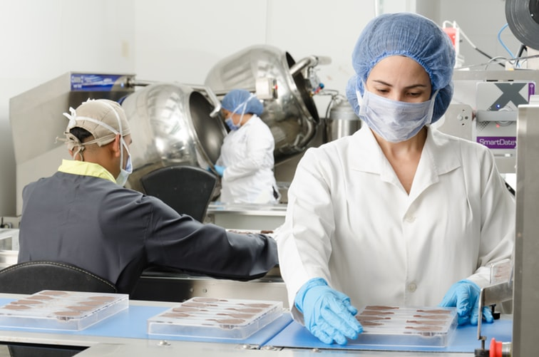

Acerca de nosotros
AV consultoria alimentaria es una empresa dedicada a consultoría y capacitación para la industria y servicios de alimentación, que busca convertirse en el socio estratégico que su empresa necesita, proporcionándole los conocimientos, medios y metodología de trabajo necesarios para garantizar la seguridad de los alimentos y sus procesos de producción, a través del cumplimiento de las normativas vigentes en cada sector de actividad al que nos dirigimos.
Quienes somos
Daniela, licenciada en alimentos
Formación y experiencia en gestión de clientes y consumidores.Auditora de sistemas de gestión de calidad e inocuidad.Formación en alimentos, en psicología social e investigación de mercados.

Juan Carlos, ingeniero en alimentos
Más de 25 años de experiencia en industria.Liderazgo de equipos de gestión.Orientación a la mejora y a resultados.Formación y actualización en calidad e inocuidad de alimentos.